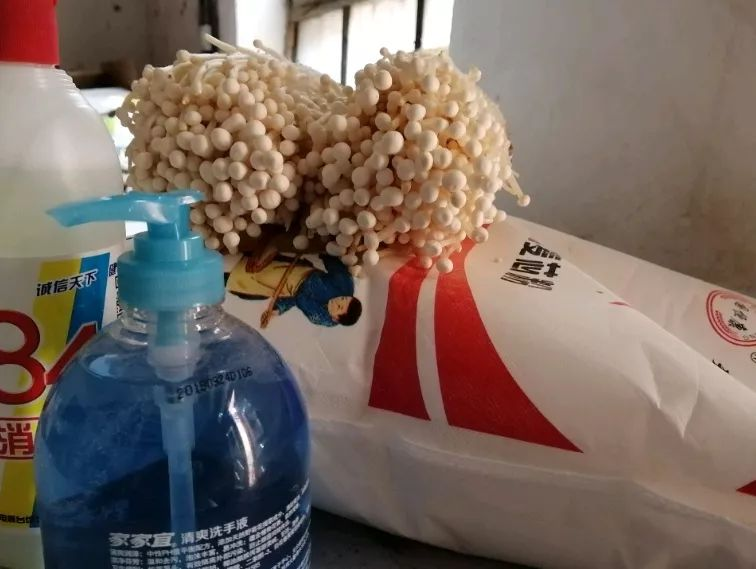
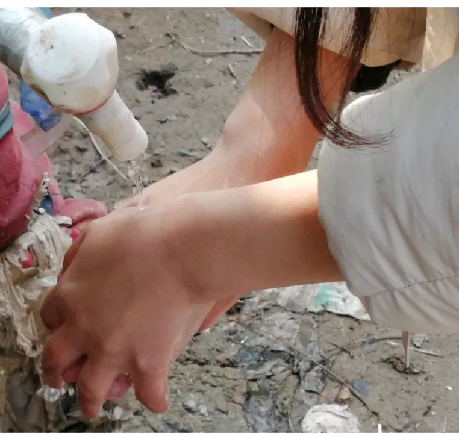
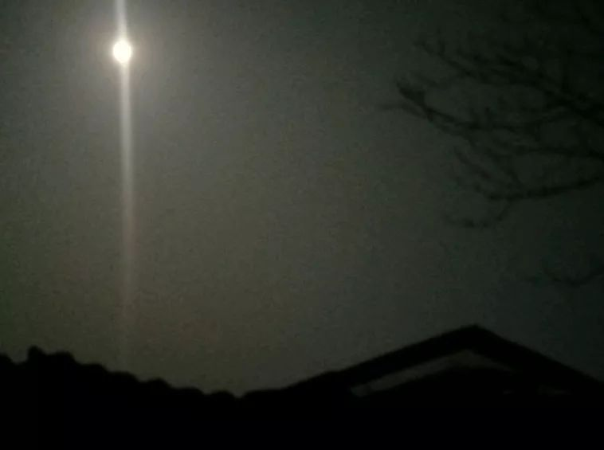

主菜留给参建火神山的女婿：武汉老人的抗疫日记 | 来稿
原文链接 备份链接 【编者按】 28日，我们收到了一位名为“尘香”的读者来信，她是武汉人，退休在家，和丈夫、女儿、女婿一起留守在武汉市江汉区：截至2020年1月29日24时，武汉市累计报告新型冠状病毒感染的肺炎病例已达2261例，死 …

- 疫 情 之 下 -
想起从武汉回来经历的种种，心里有些五味杂陈，我为村干部们的疫情防控工作点赞，为自己无恙感到庆幸，也更加迫切希望疫情早日消散，生活能重新美好起来。
”
1
1月学期末，忐忐忑忑地考完所有考试，我终于要踏上回家的路途。
13号学校就断水断电了，我和朋友被迫只能找个宾馆住一晚。那个时候，虽然已经知道华南市场有几例新型病毒感染患者，但在汉口那边，距我们很远，就没有很在意。地铁上人群像往常一样鼻对鼻眼对眼，拥挤的很，这时要有带口罩的倒显得很扎眼了。
到了宾馆，按照指示办了入住手续后，我们便拉着各自的行李箱去找房间。简单洗漱后，我们躺在床上闲聊，提起新型肺炎病毒感染，朋友只是淡淡地说，才几例，不太严重，应该跟感冒差不多吧，不要紧的。我有些犹豫地点了点头。
第二天晚上，我们上了火车，车上既嘈杂又乱，根本无法入睡，好不容易安静下来，突然对面大叔剧烈咳嗽了几声，场面顿时热闹起来。但我关心的不是那些，更害怕大叔会不会是传染者，便大气不敢喘地细细听着对面动静，所幸之后他并未再继续咳嗽。
应该只是普通感冒吧，我有点不安地推测。
到了安阳，又转了长途汽车，车上的声音也开始变得熟悉，充满韵调的地道家乡话，给我一种莫名的安慰——好像病毒已经被锁在另一个领域，这里不可能存在。
15号中午，安全到家，迎面而来地是父母春光洋溢的面容，我一把拥入他们怀里，和他们叽叽喳喳个不停。
呆在家的这几天，弟弟总是不时拿起手机对我说：姐，抖音上现在都在传病毒信息，就是武汉的那个病毒。姐妹群里朋友也开始关心我，问我身体怎么样，起初还带点开玩笑的语气，后来随着湖北疫情日益严峻，我们才开始认真起来。
我家是个小店，生意不怎么红火，但快过年了，人也渐渐开始多起来，来来往往很多人，却没有瞧见一个戴口罩的，心里开始按耐不住地慌乱。常年不动朋友圈的我此时果断决定开始转发疫情信息，通知亲戚，告诉更多的人开始防疫，时间紧迫，必须要快了。
2
几天后，我开始接到村干部一连串的电话，电话那头的人急切地问我现在的身体状况，几号回家的，是否有温度计。
“你把身体特征给我报一下，问题很严重，必须实话实说。”
“十五号到家，温度计口罩都有，我每天都在量，现在一切正常。”我一字一板地向他们报告，像极怕做错事的孩子，生怕有什么差错。
“回家隔离两周吧，现在这个事情很严重，上面命令，从武汉回来的人员一律自行在家隔离。”
听着那边冷峻的字眼，我不自觉出了一身冷汗，旁边妈妈急切地问怎么了，我两脑空白，只蹦出了一句话：“我得回家隔离。”
恰巧今年家里新盖了房子，我想，和家人分开也好，但胆小的我还是拉了姐姐陪我。姐姐半开玩笑半认真地说：“真怕你携带病毒，现在我和你一起被隔离，你可要好好的啊。”
说实话，我自己都惊慌万分，天天觉得自己会病，越慌越头晕，越晕越心慌。
作为从武汉回来的大学生，我的个人信息也就这样被暴露了，姓名、手机号等全都流传到网上。起初，我还觉得没什么，但之后就开始不断接到电话，以及几个好友验证。验证信息有几个以美女开头，我想都没想就拒绝了，心想这种招呼肯定不是什么好人；还接到一个自称是我初中同桌的电话，说是在国外看到我的名字就打了电话过来，想加微信细聊，但我并不认识这个同桌，礼貌拒绝了。
我突然意识到自己的个人信息可能存在泄露严重，很可能会被盯上，惶惶不安了好几天，所幸几天之后这种现状就消失了。
3
回家没几天，村干部就带着几个人来到我家，拿着消毒液、洗手液等东西大包小包地过来看我，我又惊又喜。
见到我无恙，村长皱着的眉头有些放缓，但又突然皱的更紧了，语重心长地说：“最近在家一定要好好照顾自己，现在疫情很严重，在家好好歇着，消好毒，先隔离两周再说。”说着将东西递到我手上，“这些东西一定要规范使用，现在疫情太紧张了。”

之后，学校也开始了紧急通知，我们每天必须在群里汇报平安，辅导员也开始不断给我们发各种有关疫情的消息，时刻关注我们的动向。
身为半个武汉人，我知道自己责任重大，绝不能因为自己的怠慢而传染给家人和朋友。量体温、消毒是每天除了吃睡最重要的事，实在无聊了就走到院子里晒晒太阳、杀杀细菌，听村里大喇叭言辞恳切的喊话声：村西头后街的那几个人啊，都什么时候了，还在大街上瞎溜达，不知道这个病毒是会死人的吗?还不赶紧在家待着去，玩手机，玩累了就睡觉去！
现在的村干部们，都在一条心努力地护村民周全。
随着确诊人数越来越多，各个地方都开始封村，我们进村口也用土给封了起来，还有两个值班的人蹲点看守，生怕把什么人放进去，感染了整个村子。
因为疫情严重，我家的店也时时被人检查，还顺便询问下身体状况。我爸进不了村，只能时常打电话给我，要是我这里有什么东西缺了，他立马骑着车儿送过来。他会把东西送到村口，姐姐再火速到村口去拿，最后再来到我这里。好像一场狙击战，每个人恪守本分，各尽其职，防止疫情的传播。
4
两周后，姐姐去工作，只剩下我一个人，突如其来的孤独和恐惧让我无法忍受。可谁知全国疫情形势更严峻了，村干部打电话过来，要我再延长几天隔离时间。
我怯怯地请求：“请问可以让我回老家住吗?我的隔离期已经过了，这里我一个人不敢住，在老家我保证不出来。可以吗？”
“可以是可以，但你一定要呆在家里别出来乱逛，很危险，知道吗？一定一定不要出门！”他又狠狠地强调了几遍。
就这样我回了老家，弟弟不用再每天给我送饭，但每天的消毒工作我仍然在做。

因为食材有些不够，恰巧有个卖菜的挨家挨户吆喝，奶奶叫我和她一起去看看。因为一直在家，我一时疏忽，竟忘了戴口罩，出门后又恰好被村医看到，瞬间有种想扭头就走的冲动。
“出门就该戴上口罩！”村医严厉地责骂道。我心里一阵愧疚，感觉无地自容。
晚上一个人在院子里静静地溜达，一抬头看到又圆又大的月亮，才想起今天是2020年的第一个圆月。既然月亮圆了，人心同了，春天，也快来了吧。

想起从武汉回来经历的种种，心里有些五味杂陈，我为村干部们的疫情防控工作点赞，为自己无恙感到庆幸，也更加迫切希望疫情早日消散，生活能重新美好起来。
-END-
作者 | 劳拉，大一学生。
题图|《流感》剧照
“我故”故事练习生培养计划，详情请戳：

About us
主编：鹿｜本期编辑：鹿
Contact us
投稿/商务合作/咨询
微信后台留言 or 邮箱：wmsygsdr@163.com
**我们是有故事的人｜华中科技大学出版社官方故事平台**
原文链接 备份链接 【编者按】 28日，我们收到了一位名为“尘香”的读者来信，她是武汉人，退休在家，和丈夫、女儿、女婿一起留守在武汉市江汉区：截至2020年1月29日24时，武汉市累计报告新型冠状病毒感染的肺炎病例已达2261例，死 …
原文链接 备份链接 非常时期，武汉成了全国人民挂念、祈福的城市。封城后，武汉人民的真实生活是什么样？ 正和岛自1月26日起特别推出《叶青：我在武汉疫区的第N天》专栏。叶青是一位定居武汉40年的市民，也是一名学者和官员。接下来的一段时间， …
原文链接 备份链接 以下文章来源于世风 ，作者吕晓宇 【疫情之下】是苍衣社开设的非虚构故事专栏，记录在新型冠状病毒疫情蔓延时，普通中国人的抗疫报告。 大家好，我是脸叔。 随着新冠肺炎的爆发，湖北地区的居民工作和生活都受到很大的影响。 …
原文链接 备份链接 从1月23日“封城”到元宵节，已经过去整整17天。即使我每天忙于记日记，也觉得时间过得很快啊。 过去我要早起，6点起床，7点到办公室，不堵车。现在则是天天睡到自然醒，有点提前退休的感觉。虽然我还有两年上班的时间。 …
原文链接 备份链接 若干年后回望，这一定是一段值得铭记的日子。因为新型冠状病毒感染的肺炎疫情，许多家庭无法团圆。疫情数据地图的每次刷新都令人揪心。我们和千万武汉人在一起，这不只是一句安慰，因为没有人能够置身事外。 之前，我们向用户征集这 …